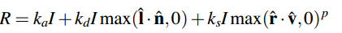

Phong Shading
CS184 Graphics
This was built for project 1 in CS184 at UC Berkeley.Built using: C++, OpenGL
Intro
Problem: Given a scene with objects and lights, how do you determine the color and shading of the object?
Answer: Phong reflection model! Basically, for every pixel that represents the object, you just take the sum of three terms: ambient, Lambertian (diffuse), and specular.
Ambient: This is the hackiest term. The ambient term essentially describes light that has bounced around the scene so much that it's become pretty much omnipresent. Diffuse: This is desribes how light scatters on non-shiny surfaces, based on the incoming direction of light. Think of plastic. You'd expect the face of a plastic object facing the light source to be brighter than the face not exposed to light. This is described by Lambert's cosine law. Specular: This is describes the "shininess" of materials. Metal objects, instance, have this property. Putting it all together we get:
If you want more information on the specifics of the equation you can take a look at the lecture slides here or wikipedia page . Anyways, if you do all that you get things that look like the sample images below. You can also do cartoon shading by thresholding the values appropiately.
Example Images
Specular Point Light
-pl -2 2 2 0.1 0.6 0.9 -ks 0.8 0.8 0.8 -sp 10

Specular Directional Light
-dl -2 1 0 0.1 0.8 0.1 -ks 0.8 0.8 0.8 -sp 5

Diffused Point Light
-pl 3 3 5 0 0.3 .8 -kd .9 .9 .6

Diffused and Specular Point Light
-pl -3 3 5 0 0.3 .8 -kd .9 .9 .6 -ks 1 1 0.5 -sp 5

Diffused, Specular, and Ambient Point Light
-pl -3 3 5 0.5 0.3 .8 -kd .9 .9 .6 -ks 1 1 0.5 -sp 25 -ka 1 0 0

Diffused, Specular, and Ambient Point and Directional Light
-pl 200 200 200 0.6 0.6 0.6 -dl 0 1 -1 0 0.4 0.4 -kd 1 1 0 -ka 0.1 0.1 0 -ks 0.8 0.8 0.8 -sp 16

Toon Shading
-toon -pl -3 3 5 0.7 1 1 -dl 2 3 2 1 1 1 -kd .9 .9 .6 -ks 1 1 0.5 -sp 30 -ka 0.1 0.2 0.1

Toon Shading with Multiple Spheres
-toon -mult -pl -3 3 5 0.4 0.7 1 -pl 0 -3 2 0.1 0.6 0.8 -kd .9 .9 .6 -ks 1 1 0.5 -sp 30 -ka 0.1 0.1 0.2

Phong Shading with Multiple Spheres
-mult -pl -3 3 5 0.5 0.0 .8 -pl -3 -2 1 0.0 0.0 0.6 -kd .9 .9 .6 -ks 1 1 0.5 -sp 25 -ka 0.1 0.1 0.1